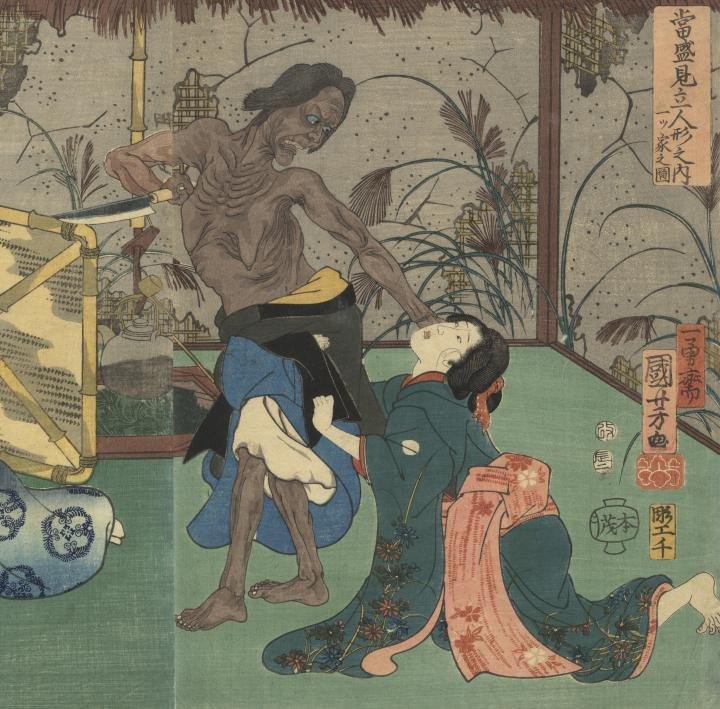

片肌を脱ぎ、包丁を持つ鬼婆。足元にすがる娘を押し退けている。肌は黒く、青い瞳を大きく見開いている。
著作者：一勇齋國芳／出典：親書誌：U426_nichibunken_0295：當盛見立人形之内 一ツ家之圖；トウセイ ミタテ ニンギョウ ノ ウチ ヒトツヤ ノ ズ／日付：2014／資源識別子：U426_nichibunken_0295_0001_0000
Copyright (c)2010- International Research Center for Japanese Studies, Kyoto, Japan. All rights reserved.